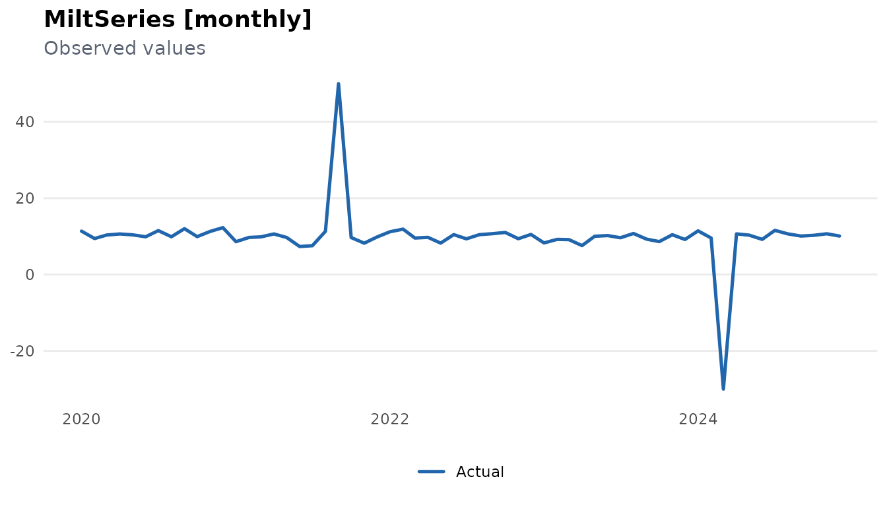
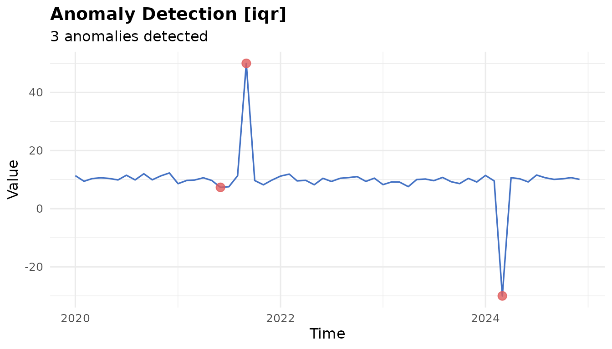
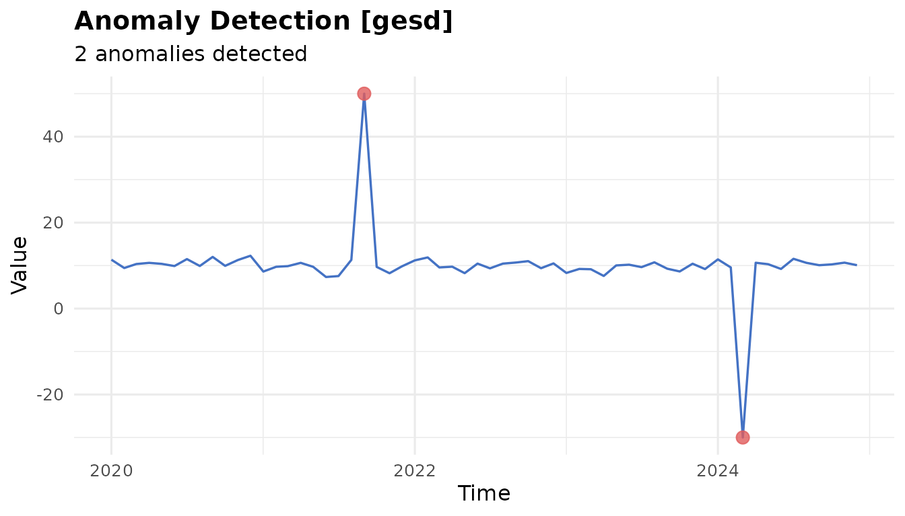
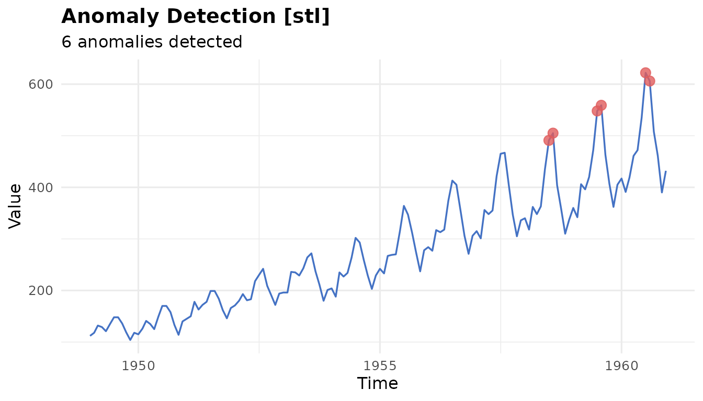
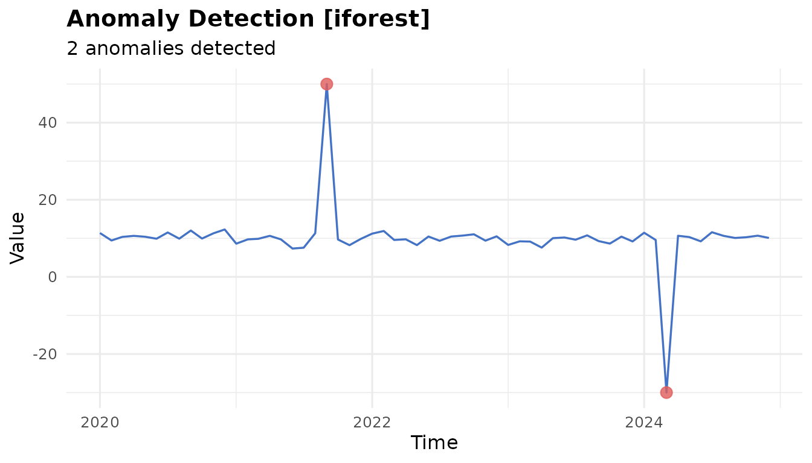
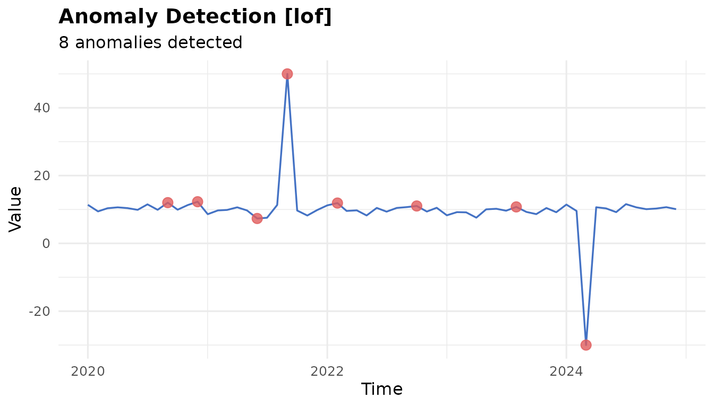
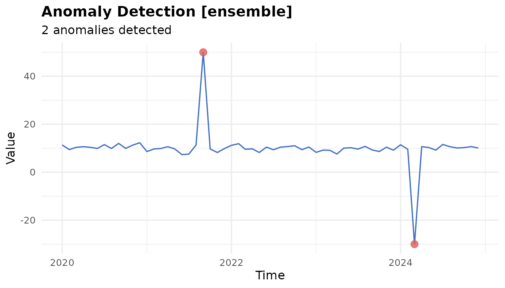
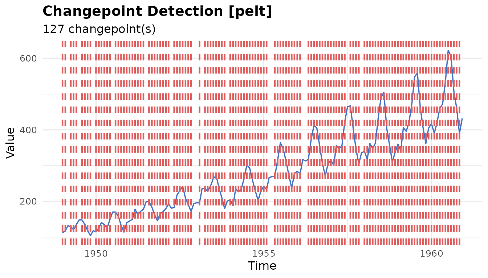

library(milt)
#> milt 0.1.0 — Modern Integrated Library for Timeseries
#> Use `list_milt_models()` to see available models.Overview
milt’s anomaly detection API follows a two-step pattern:
detector <- milt_detector("<method>", ...)
anomalies <- milt_detect(detector, series)Results are returned as a MiltAnomalies object with
print(), plot(), and as_tibble()
methods.
1. Create a series with injected spikes
set.seed(42)
tbl <- tibble::tibble(
date = seq(as.Date("2020-01-01"), by = "month", length.out = 60),
value = c(rnorm(20, 10, 1), 50, rnorm(19, 10, 1), # spike at 21
rnorm(10, 10, 1), -30, rnorm(9, 10, 1)) # dip at 51
)
s <- milt_series(tbl, time_col = "date", value_cols = "value")
plot(s)
2. IQR detector (fast, no assumptions)
d <- milt_detector("iqr", k = 1.5)
anm <- milt_detect(d, s)
print(anm)
#> # MiltAnomalies [iqr]
#> # Series : 60 observations 2020-01-01 — 2024-12-01
#> # Anomalies : 3 / 60 (5%)# Anomalous times:
#> # A tibble: 3 × 3
#> time value .anomaly_score
#> <date> <dbl> <dbl>
#> 1 2021-06-01 7.34 0.0957
#> 2 2021-09-01 50 29.3
#> 3 2024-03-01 -30 29.3
plot(anm)
3. GESD test (statistical, iterative)
d_gesd <- milt_detector("gesd", max_anoms = 5, alpha = 0.05)
anm_gesd <- milt_detect(d_gesd, s)
plot(anm_gesd)
4. STL decomposition–based
STL separates trend and seasonality; anomalies are in the remainder:
air <- milt_series(AirPassengers)
d_stl <- milt_detector("stl", threshold = 3)
anm_stl <- milt_detect(d_stl, air)
print(anm_stl)
#> # MiltAnomalies [stl]
#> # Series : 144 observations 1949-01-01 — 1960-12-01
#> # Anomalies : 6 / 144 (4.2%)# Anomalous times:
#> # A tibble: 6 × 3
#> time value .anomaly_score
#> <date> <dbl> <dbl>
#> 1 1958-07-01 491 3.17
#> 2 1958-08-01 505 3.36
#> 3 1959-07-01 548 3.54
#> 4 1959-08-01 559 3.53
#> 5 1960-07-01 622 4.39
#> 6 1960-08-01 606 3.44
plot(anm_stl)
5. Isolation Forest
Requires the isotree package:
d_if <- milt_detector("iforest", n_trees = 50, threshold = 0.6)
anm_if <- milt_detect(d_if, s)
plot(anm_if)
6. Local Outlier Factor
Requires the dbscan package:
d_lof <- milt_detector("lof", k = 5, threshold = 1.5)
anm_lof <- milt_detect(d_lof, s)
plot(anm_lof)
7. Ensemble detection
Combine multiple detectors with majority vote or mean score:
d1 <- milt_detector("iqr", k = 1.5)
d2 <- milt_detector("grubbs", alpha = 0.05)
d3 <- milt_detector("gesd", max_anoms = 5)
ens <- milt_detector("ensemble",
detectors = list(d1, d2, d3),
method = "majority")
anm_ens <- milt_detect(ens, s)
plot(anm_ens)
8. Changepoint detection
cp <- milt_changepoints(air, method = "pelt", stat = "mean")
print(cp)
#> # MiltChangepoints [pelt]
#> # Series : 144 obs 1949-01-01 — 1960-12-01
#> # Changepoints: 127# Locations:
#> # A tibble: 127 × 2
#> index time
#> <int> <date>
#> 1 1 1949-01-01
#> 2 2 1949-02-01
#> 3 4 1949-04-01
#> 4 5 1949-05-01
#> 5 6 1949-06-01
#> 6 8 1949-08-01
#> 7 9 1949-09-01
#> 8 10 1949-10-01
#> 9 11 1949-11-01
#> 10 13 1950-01-01
#> # ℹ 117 more rows
plot(cp)
9. Tidy output
tbl_out <- tibble::as_tibble(milt_detect(milt_detector("iqr"), s))
head(tbl_out)
#> # A tibble: 6 × 6
#> time value .is_anomaly .anomaly_score is_anomaly anomaly_score
#> <date> <dbl> <lgl> <dbl> <lgl> <dbl>
#> 1 2020-01-01 11.4 FALSE 0 FALSE 0
#> 2 2020-02-01 9.44 FALSE 0 FALSE 0
#> 3 2020-03-01 10.4 FALSE 0 FALSE 0
#> 4 2020-04-01 10.6 FALSE 0 FALSE 0
#> 5 2020-05-01 10.4 FALSE 0 FALSE 0
#> 6 2020-06-01 9.89 FALSE 0 FALSE 0